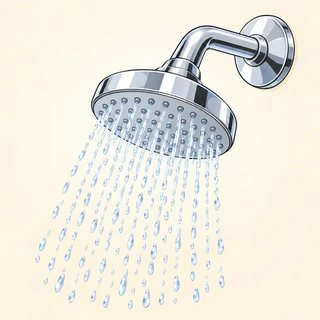
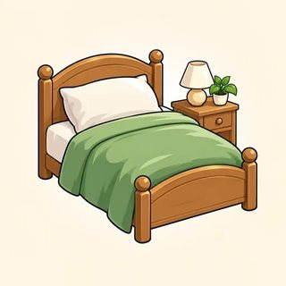
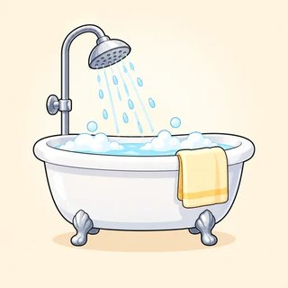
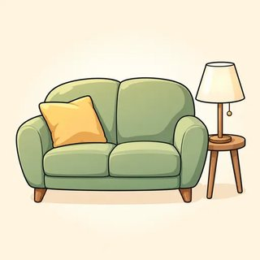
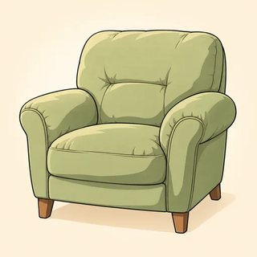
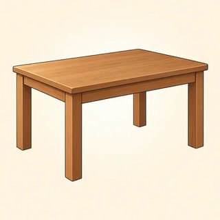
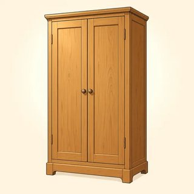

English Foundations (A1) · Instructor Kit
Module 3
Everyday Life
My day. Your day. My home.
Classes C7–C9 · today's map
My day → your day → my home
- 3.1 My day: I get up. I don't work on Sunday. Do you…?
- 3.2 Time, days & he/she: She gets up at seven.
- 3.3 My home: There is a bed. There are two chairs.
NOTE Your real life, a new identity card, or a dream life: all are OK.
3.1 · New words · my day
What do you do every day?
🌅
get up

take a shower

get dressed

have breakfast

go to work

have lunch
🏠
come home

cook dinner

watch TV

read

study

go to bed
3.1 · Present simple · I / you / we / they
Habits and routines
| ✅ | I / You / We / They get up at seven. |
|---|---|
| ❌ | I / You / We / They don't work on Sunday. |
| ❓ | Do you get up early? |
| 💬 | Yes, I do. / No, I don't. |
TIME in the morning · in the afternoon · in the evening · at night · every day
3.1 · Check the meaning
"I get up at seven."
Only today? (No.) · Every day? (Yes.) · Is it a habit? (Yes.)
"I don't work on Sunday." Do I work on Sunday? (No.)
"Do you cook dinner?" Answer: "Yes, I cook"? (No! "Yes, I do.")
WATCH I don't work ✅ · I don't works ❌ · I no work ❌
3.1 · Model dialogue
What time do you get up?
Sam: What time do you get up?
Mia: I get up at six. I take a shower and have breakfast.
Sam: Oh, I don't get up early. I wake up at eight!
Mia: Do you have breakfast?
Sam: No, I don't. I only drink coffee. Then I go to work.
3.1 · Pair task · 10 min
Same or different?
- Use your picture cards (or a new identity card)
- Ask: Do you…?
- Find 3 things the same and 2 different
- Tell the class: "We both… / I don't…"
Ask or write? (Ask.)
First word of the question? ("Do.")
How many the same? (Three.)
A new identity card is OK? (Yes.)
First word of the question? ("Do.")
How many the same? (Three.)
A new identity card is OK? (Yes.)
3.2 · What time is it?
It's…
EASY WAY Just say the numbers. It always works. PAST ↓ · TO ↑ 1–30 past this hour · 31–59 to the next
3.2 · Days · at / on / in
Monday · Tuesday · Wednesday · Thursday · Friday · Saturday · Sunday
| at | a clock time · night | at 7:00 · at noon · at night |
|---|---|---|
| on | a day | on Monday · on the weekend |
| in | part of the day · month | in the morning · in July |
WATCH Days need a Capital letter · Wednesday = "WENZ-day"
3.2 · He / she / it + -s
I work → She works
| +s | works · gets up · reads · plays |
|---|---|
| +es | watches · finishes · fixes · goes |
| y→ies | studies (but plays) |
| ! | have → has |
| ❌ ❓ | She doesn't work. · Does she work? — Yes, she does. |
WATCH doesn't works ❌ · Does he gets ❌ · the -s lives in one place only
3.2 · Pronunciation · hand on your throat
Three sounds for -s
/s/🐍 no buzz
works · gets · cooks · sleeps
works · gets · cooks · sleeps
/z/🐝 buzz
plays · reads · goes · comes
plays · reads · goes · comes
/ɪz/👏 one more beat
watch-es · fix-es · fin-ish-es · re-lax-es
watch-es · fix-es · fin-ish-es · re-lax-es
SHOW ME 1 finger /s/ · 2 fingers /z/ · 3 fingers /ɪz/
3.2 · Information gap · 12 min
What time does Lina get up?
- A and B: don't show your card
- Part 1: "What time is it on clock 2?" → draw the hands
- Part 2: "What time does Lina…?" → "She …s at…"
- At the end: compare your cards
Show your card? (No.)
Who asks first? (A.)
What do you draw? (The hands.)
Don't understand? ("Can you say it again, please?")
Who asks first? (A.)
What do you draw? (The hands.)
Don't understand? ("Can you say it again, please?")
3.3 · New words · a home
Rooms and things

kitchen

bedroom

bathroom

living room

sofa

armchair

table

fridge

lamp

wardrobe

mirror

window
3.3 · There is / There are
One → is · Two or more → are
| 1 thing | 2+ things | |
|---|---|---|
| ✅ | There is (There's) a bed. | There are two chairs. |
| ❌ | There isn't a garden. | There aren't any plants. |
| ❓ | Is there a balcony? | Are there any shops? |
| 💬 | Yes, there is. / No, there isn't. | Yes, there are. / No, there aren't. |
WATCH There have a table ❌ · There is two chairs ❌ · Yes, there's ❌
3.3 · Where is the cat? 🐈
in · on · under · next to · between · behind · in front of · above
- The cat is on the sofa.
- The cat is under the table.
- The cat is between the two chairs.
- The cat is in front of the TV.
"There's a bed." How many beds? (One.)
"There are two chairs." Is or are? (Are.)
"There's some water." Can you count water? (No. So: is.)
"in front of" — three words? (Yes!)
"There are two chairs." Is or are? (Are.)
"There's some water." Can you count water? (No. So: is.)
"in front of" — three words? (Yes!)
3.3 · Model dialogue
How many rooms are there?
Tom: Your new apartment is nice! How many rooms are there?
Sara: There are four rooms. There's a living room, a kitchen, a bedroom, and a bathroom.
Tom: Is there a balcony?
Sara: Yes, there is! It's behind the living room.
Tom: Is there a garage?
Sara: No, there isn't. But there's an elevator.
3.3 · Pair task · 20 min
Draw a home. Describe it.
- Draw any home: a room, an apartment, a house, a shared room, a dream home, or a home card
- A talks: "There's a bed next to the window…"
- B draws and asks: "Is there a…? Are there any…?"
- Show your pictures. Swap!
Show your picture first? (No!)
Your real home only? (No, any home.)
A talks, B…? (Draws and asks.)
When do you show? (At the end.)
Your real home only? (No, any home.)
A talks, B…? (Draws and asks.)
When do you show? (At the end.)
You can now talk about everyday life
Module 3 done 🎉
- I get up at seven. I don't work on Sunday. Do you…?
- It's quarter to four. She gets up at six thirty. He doesn't work on Monday.
- There's a bed next to the window. Are there any chairs?
Homework: online lessons 3.1–3.3 with 🔊. Next: Module 4, can / can't.